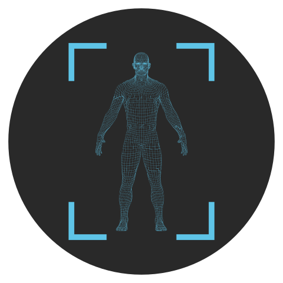

<ion-app>
  <!-- <ion-router-outlet ></ion-router-outlet> -->
  <!-- <ion-app> -->
  <!-- <ion-split-pane > -->
    <ion-menu contentId="main-content" auto-hide="true" type="overlay" *ngIf="token">

      <ion-header>
        <ion-toolbar>
          <ion-title>Menu</ion-title>
        </ion-toolbar>
      </ion-header>

      <ion-content>
        <ion-list id="inbox-list">
          <ion-menu-toggle auto-hide="false" *ngFor="let p of appPages; let i = index">
            <ion-item [class.active-item]="selectedPath.startsWith(p.url)" routerDirection="root" [routerLink]="[p.url]"
              lines="none">
              <ion-icon slot="start" [ios]="p.icon + '-outline'" [md]="p.icon + '-sharp'"></ion-icon>
              <ion-label>{{ p.title }}</ion-label>
            </ion-item>
          </ion-menu-toggle>
        </ion-list>
      </ion-content>
      <ion-footer translucent="true">
        <ion-toolbar translucent="true">
          <ion-item tappable (click)="logout()" routerDirection="root" lines="none">
            <ion-icon name="log-out" slot="start"></ion-icon>
            <ion-label>Déconnexion</ion-label>
          </ion-item>
        </ion-toolbar>
      </ion-footer>
    </ion-menu>


    <ion-router-outlet id="main-content"></ion-router-outlet>
    <ion-fab vertical="bottom" horizontal="end"  slot="fixed" fill="clear" *ngIf="token" >
      <ion-fab-button fill="clear" >
        

      </ion-fab-button>
    </ion-fab>
  <!-- </ion-split-pane> -->
  <!-- </ion-app> -->
</ion-app>
